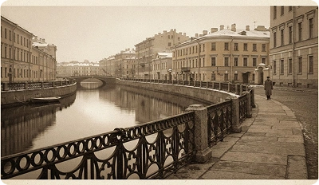

Белые ночи
Ночь первая

Была чудная ночь, такая ночь, которая разве только и может быть тогда, когда мы молоды, любезный читатель. Небо было такое звёздное, такое светлое небо, что, взглянув на него, невольно нужно было спросить себя: неужели же могут жить под таким небом разные сердитые и капризные люди?
Это тоже молодой вопрос, любезный читатель, очень молодой, но дай его вам господь чаще на душу!.. Говоря о капризных и разных сердитых господах, я не мог не вспомнить и своего благонравного поведения во весь этот день.
С самого утра меня стала мучить какая-то удивительная тоска. Мне вдруг показалось, что меня, одинокого, все покидают и что все от меня отступаются. Оно, разумеется, всякий вправе спросить: кто же эти все? потому что вот уже восемь лет, как я живу в Петербурге, и почти ни одного знакомства не умел завести.
Но к чему мне знакомства? Мне и без того знаком весь Петербург; вот почему мне и показалось, что меня все покидают, когда весь Петербург поднялся и вдруг уехал на дачу.
Мне страшно стало оставаться одному, и целых три дня я бродил по городу в глубокой тоске, решительно не понимая, что со мною делается. Пойду ли на Невский, пойду ли в сад, брожу ли по набережной — ни одного лица из тех, кого привык встречать в том же месте, в известный час целый год.